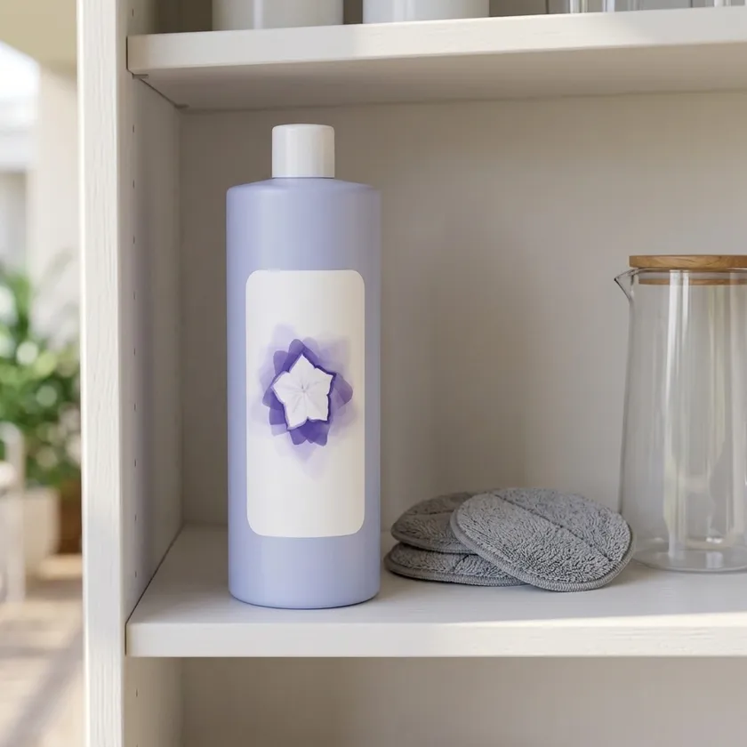
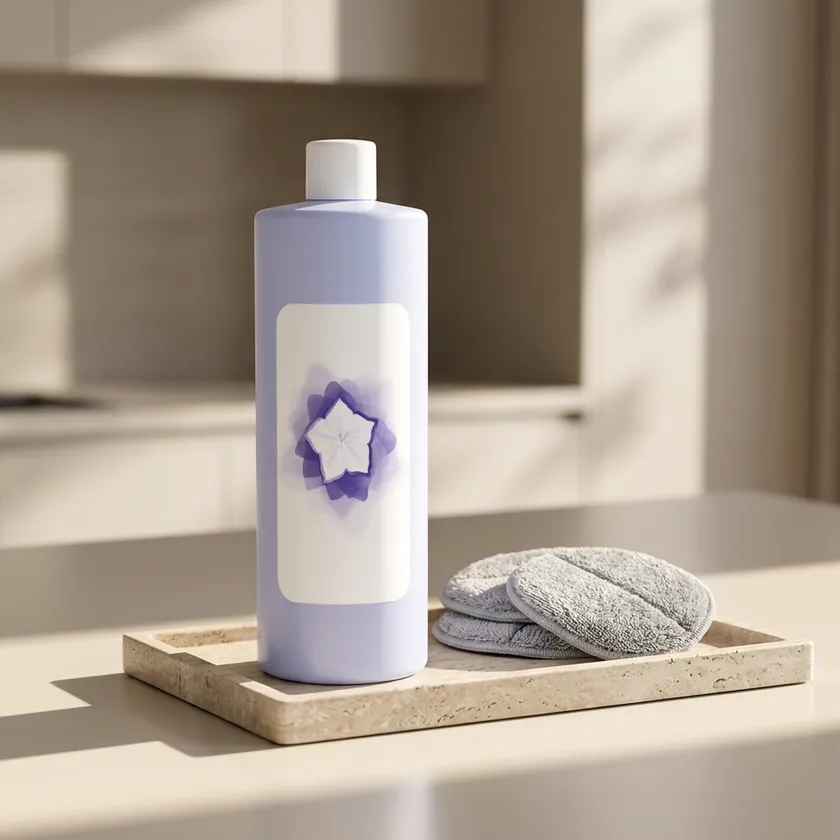
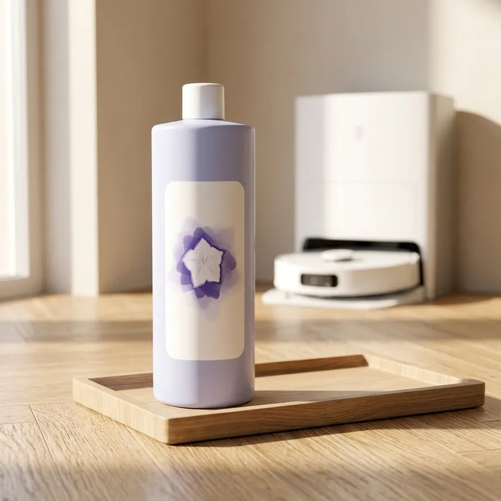

에코백스 (ECOVACS)
에코백스 DEEBOT 세정제 1L 라벨 대조법과 1병·2병 선택 기준
글·구성: 제이상점 · 기종별 1:1 호환 실물 점검 · 교체 주기 비교표 · 스마트스토어 패키지 안내

핵심 관리 · 선택 체크포인트
- 키가 있는 1L 원통형 용기 규격과 수납장 높이 확인: 에코백스 전용 1L 세정제는 슬림한 원통형 용기에 하얀 스크류 캡이 결합된 형태여서 좁은 다용도실 수납장 칸에도 세워 두기 좋습니다.
- 1년 패키지 구성품과 기종별 옵션 확인표: 기종 및 세부 버전에 따라 자동 세제 모듈 유무나 희석 기준이 다를 수 있으므로 사용 전 보유 모델의 설명서 안내를 꼭 확인해 주세요.
- 회전형 물걸레 패드 건조 매트와 스테이션 코너 정돈 팁: 물걸레 청소 후 패드를 분리해 규조토 매트나 통풍 선반에서 말릴 때 스테이션 세제 잔량도 함께 체크해 두면 다음 청소 예약 전에 부족함 없이 채워 둘 수 있습니다.
- 주문 전 제품군 구분과 수령 후 라벨 확인까지 차례로 챙겨요: 바닥용과 창문용 세정제를 구별하는 핵심 포인트는 에코백스 DEEBOT과 WINBOT 세제 구분법에서, 택배 수령 뒤 주문 수량과 용기 표기를 대조하는 방법은 에코백스 DEEBOT 세제 수령 후 옵션·라벨 대조하기에서 확인해 보세요.
- 보유 기종명과 수납 여유에 맞춰 1병·2병 옵션을 선택하세요: 보유 중인 기종과 현재 수납함의 남은 부품 수를 확인하셨다면 에코백스 정품 전용 세정제 1L 1병·2병 옵션 페이지에서 상세 구성과 선택 옵션을 확인해 보세요.
실물 부품 디테일 · 관리 구성 이미지




부품 규격 · 점검 기준표
| 확인 항목 | 부품·옵션 특징 | 점검·선택 포인트 |
|---|---|---|
| 1L - 1병 | 1L 본품 1병 | 한 병씩 깔끔하게 수납하며 도크 세제통·물통에 보충할 때 |
| 1L - 2병 (복수구매할인) | 1L 본품 2병 묶음 | 자주 물걸레질을 돌려 예비 1병을 할인 구성으로 비축해 둘 때 |
💡 교체 주기가 겹치는 필터·브러시·물걸레·더스트백은 단품 배송비를 여러 번 내기보다 에코백스 세제 세정제 기간별 세트(3개월·6개월·1년)로 미리 구비해 두면 물세척 후 24시간 교대 건조까지 끊김 없이 관리할 수 있습니다.
자주 묻는 질문 (FAQ)
Q. 에코백스X8의 1L - 1병 규격과 관리 기준은 무엇인가요?
A. 1L 본품 1병 규격을 사용하며, 한 병씩 깔끔하게 수납하며 도크 세제통·물통에 보충할 때 기준으로 점검·교체하면 청소 효율을 안정적으로 유지할 수 있습니다.
Q. 에코백스X8의 1L - 2병 (복수구매할인) 규격과 관리 기준은 무엇인가요?
A. 1L 본품 2병 묶음 규격을 사용하며, 자주 물걸레질을 돌려 예비 1병을 할인 구성으로 비축해 둘 때 기준으로 점검·교체하면 청소 효율을 안정적으로 유지할 수 있습니다.
제이상점 1:1 검수 추천 패키지 · 구매 안내
☑️ 주문 전 확인해 두면 좋은 제이상점 안심 포인트
· 기종별 1:1 전용 규격 검수: 모델명·연식에 맞는 호환·정품 구성을 검수해 오주문 불안을 줄였습니다.
· 해외직배송 미리 주문 팁: 중국 구매대행·해외직배송 상품이므로 마지막 여분 1개를 꺼내 쓰는 시점에 개인통관고유부호와 함께 여유 있게 주문해 두시면 훨씬 경제적인 비용으로 끊김 없이 교체하실 수 있습니다.
· 기종별 1:1 전용 규격 검수: 모델명·연식에 맞는 호환·정품 구성을 검수해 오주문 불안을 줄였습니다.
· 해외직배송 미리 주문 팁: 중국 구매대행·해외직배송 상품이므로 마지막 여분 1개를 꺼내 쓰는 시점에 개인통관고유부호와 함께 여유 있게 주문해 두시면 훨씬 경제적인 비용으로 끊김 없이 교체하실 수 있습니다.
📖 더 많은 가정 내 사용 스토리와 상세 후기가 궁금하시다면
📱 네이버 블로그 모바일 원문 보기 ↗